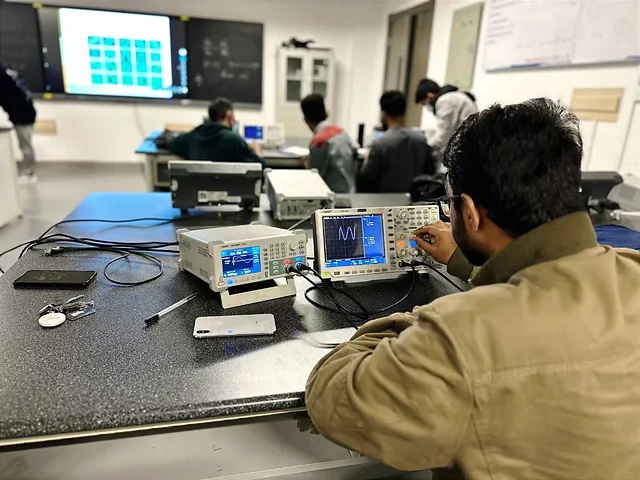

CSC Scholar · AI & Software Engineering
Engineering intelligence, from compilers to autonomous flight.
I’m Golam Mahadi—a Computer Science master’s researcher at Dalian University of Technology, building faster optimization systems, smarter trajectories and practical digital products.
Research focus
Finding better decisions under complex constraints.
My work connects reinforcement learning, compiler systems and autonomous planning—fields where the search space is huge and every decision has a measurable cost.
RL-guided LLVM optimization for SAT-solving workloads
Learning which compiler passes—and which ordering—can reduce search cost while improving runtime performance.
02 · AUTONOMY↗UAV trajectory selection
Fast, accurate and resource-aware path selection through reinforcement learning.
03 · COORDINATION↗Multi-agent prediction
Coordinated trajectory prediction and best-way finding in dynamic environments.
04 · MODELLING↗Battery DFN models
Ongoing electrochemical modelling for better understanding and prediction of battery behaviour.
Selected publications
Four papers across AI, software practice and human outcomes.
Peer-reviewed and open research spanning AI-driven Scrum, mathematical games, economic forecasting and ICT employment.
The Future of Scrum in AI-Driven Software Development
Gazi Sabbir Ahammad, Sujan Acharya, Ahnaf Aiman Abdi, Golam Mahadi
Spot It! A Mathematical Approach to Offline Games
First author · RA Journal of Applied Research
Tourism Factors and Economic Growth through Random Forest
Forum for Economic and Financial Studies
ICT Education and Employment Disparities
North American Academic Research

One profile, two modes of work
Research rigour meets practical delivery.
I graduated in Software Engineering from Zhengzhou University in 2025 and began an MSc in Computer Science at Dalian University of Technology under the Chinese Government Scholarship. Alongside research, I work in IT and foreign sales at Dayang International Company.
Technical depth: AI research, algorithms, software engineering, Python, C/C++, web systems and computer vision.
Commercial clarity: websites, SEO, marketing, catalogues, product communication and Chinese–English support.
Cross-cultural delivery: academic and business experience across Bangladesh, China and remote international clients.
Freelance & collaboration
Useful work, clearly scoped and carefully delivered.
Available for focused freelance projects, research collaboration and technical support.
Web development & technical SEO
Fast, searchable websites with clear content systems, analytics-ready structure and strong Core Web Vitals foundations.
02AI, research & technical prototyping
Python prototypes, literature synthesis, experiment support, data workflows and research communication.
03Digital operations & cross-border support
Product catalogues, visual communication, SEO content, customer support and Chinese–English business coordination.
Available for selected projects
Have a research problem, software idea or digital growth challenge?
Tell me what outcome you need. I’ll reply with a clear next step, practical scope and honest assessment.